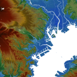

|  |
この地図の作成に当たっては、 国土地理院長の承認を得て、同院発行の基盤地図情報を使用しています。 （承認番号 平25情使、 第276号）
この地図は富士川砂防事務所長の承認を得て、 同所発行の基盤地図情報を使用しています。 （承認番号 国関整富調第１６号）
この地図は沼津河川国道事務所長の承認を得て、 同所発行の基盤地図情報を使用しています。 （承認番号国部整沼一調第 70 号）
この地図は関東地方整備局河川部長の承認を得て、 同所発行の基盤地図情報を使用しています。 （承認番号 国関整河計第４３号）
<iframe src="index.html?z=16&c=35.6896342,139.69210069999997"
style="border:none"
width=600 height=450 >
</iframe>
東京都庁周辺